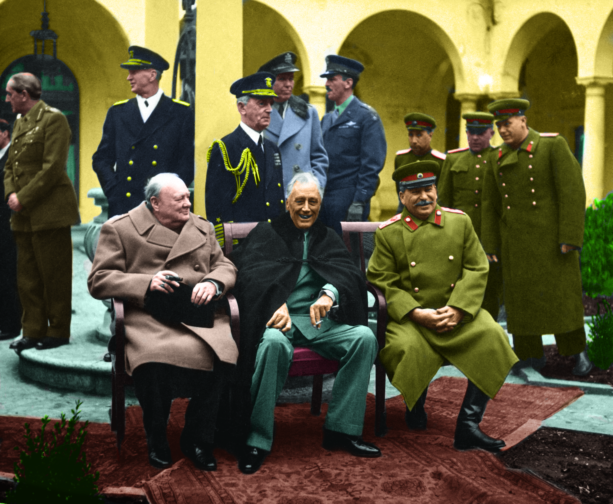
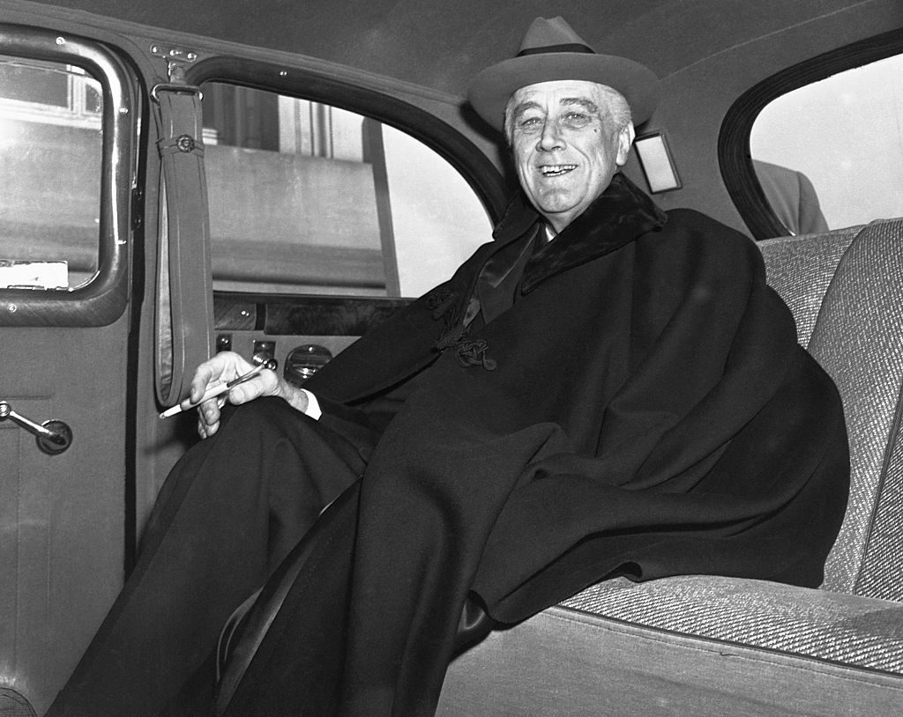
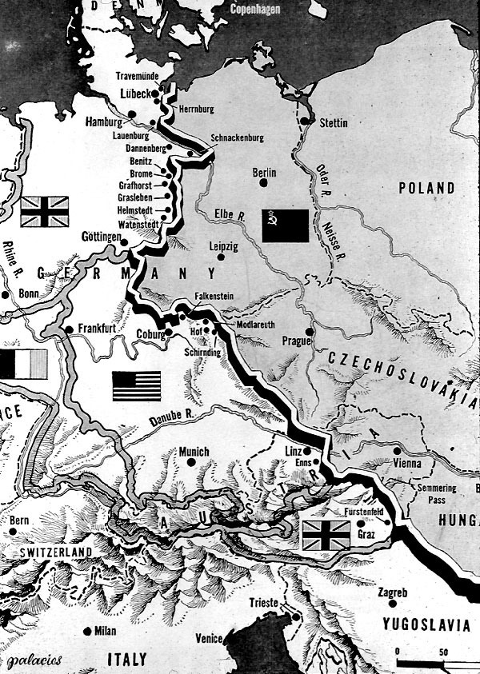
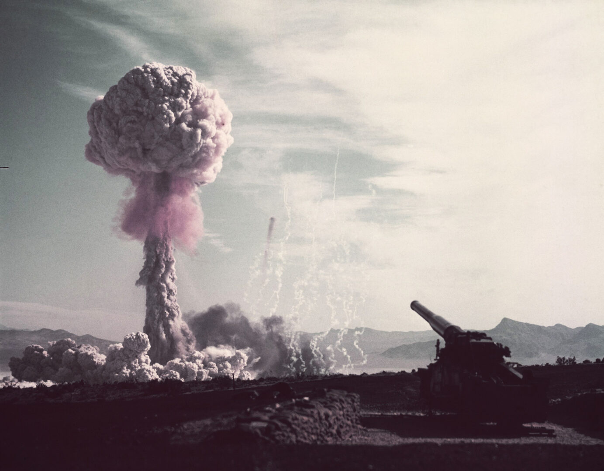
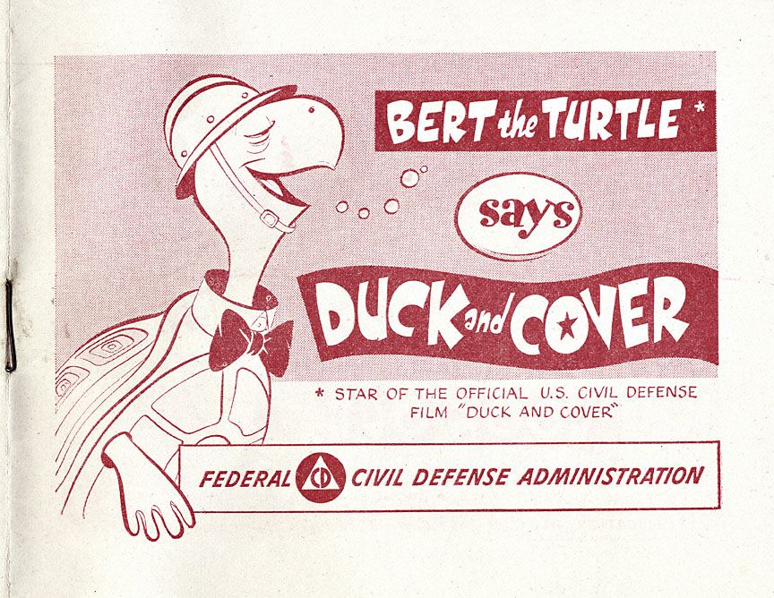
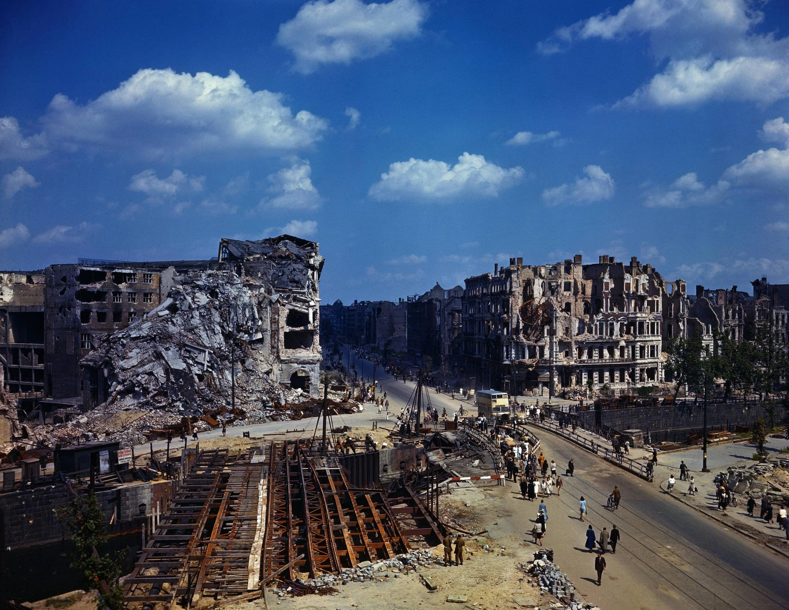
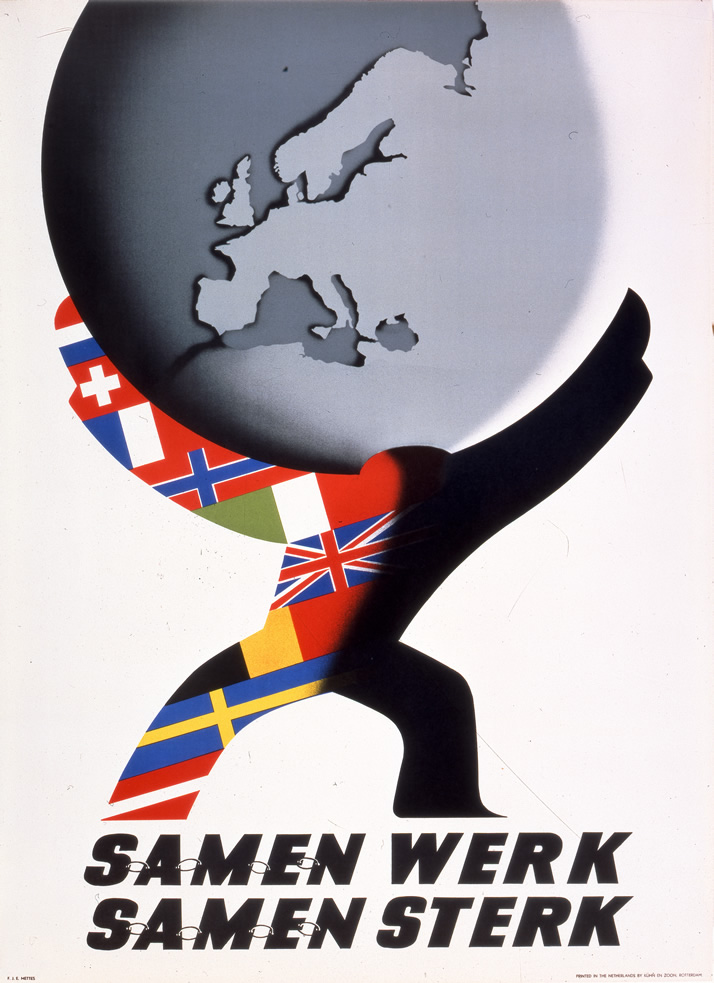
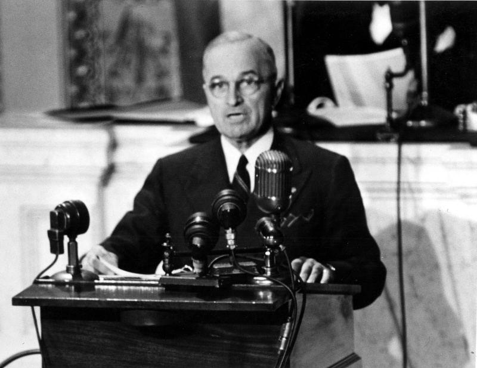
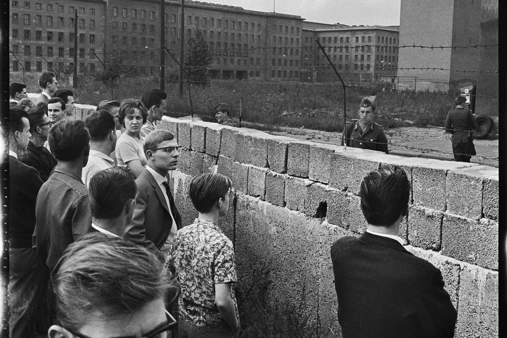
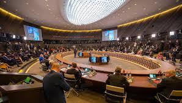

ESSENTIAL QUESTIONHow did the end of World War II quickly create a new global conflict between former allies?
POSTWAR COLD WAR ROADMAP
1945Yalta and Potsdam divide Germany and expose distrust among former allies.
1946Churchill warns that an Iron Curtain has divided Europe.
1947The Truman Doctrine turns containment into official U.S. policy.
1948The Marshall Plan uses money to rebuild Western Europe and resist communism.
1949NATO forms and the Soviet Union tests its first atomic bomb.
In February 1945, three leaders sat together in a palace on the Black Sea. Franklin RooseveltU.S. president during most of World War II., Winston ChurchillBritish prime minister during World War II., and Joseph StalinSoviet dictator who ruled the USSR. had helped defeat Nazi Germany. Now they had to decide what the world would look like after the fighting stopped.
In February 1945, three leaders met near the Black Sea. Roosevelt, Churchill, and Stalin had helped defeat Nazi Germany. Now they had to decide what would happen after the war.
They smiled for cameras and talked about peace. But underneath the smiles were deep fears. The United States and Britain wanted free elections and open trade. Stalin wanted control over Eastern Europe to protect the Soviet Union. The war was ending, but a new rivalry was already beginning.
They smiled for pictures and talked about peace. But they did not trust each other. The United States and Britain wanted free elections. Stalin wanted control over Eastern Europe. The war was ending, but a new conflict was beginning.
CHAPTER ONE
YALTA AND THE DIVISION OF THE WORLD

Churchill, Roosevelt, and Stalin at Yalta, February 1945. Wikimedia Commons.
The Yalta ConferenceA 1945 meeting about the postwar world. took place before Germany surrendered. The Allies agreed that Germany would be divided into occupation zones. They also agreed that countries freed from Nazi control should hold free elections. On paper, this sounded like a plan for peace.
The Yalta Conference happened before Germany surrendered. The Allies agreed to divide Germany into zones. They also said freed countries should have free elections. It sounded like a plan for peace.
The problem was trust. Stalin had already moved Soviet troops into much of Eastern Europe. He wanted a buffer zoneLand that protects one country from another. between the Soviet Union and Germany. Roosevelt and Churchill wanted democracy in Europe, but they had little power to force Stalin to keep his promises.
The problem was trust. Stalin already had Soviet troops in Eastern Europe. He wanted a buffer zone to protect the Soviet Union. Roosevelt and Churchill wanted democracy, but they could not easily force Stalin to allow it.
Within two years, most countries in Eastern Europe had communist governments that answered to Moscow. The agreements at Yalta did not prevent division. They helped mark where the division would begin.
Within two years, many Eastern European countries had communist governments controlled by Moscow. Yalta did not stop division. It showed where the division would start.
DID YOU KNOW

Roosevelt at Yalta, February 1945.
Roosevelt was already very sick at Yalta. He died just two months later. So one of the biggest meetings of the twentieth century happened while one of its three main leaders was physically fading in front of everyone.
FAST FACTS
HOW QUICKLY ALLIED VICTORY TURNED INTO COLD WAR RIVALRY
1945the year World War II ended and the United States and Soviet Union began arguing over Europe’s future
1946the year Churchill’s Iron Curtain speech gave people a powerful image for Europe’s division
1947the year the Truman Doctrine promised U.S. support for countries resisting communist pressure
1949the year NATO formed and the Soviet atomic bomb ended America’s nuclear monopoly
CHAPTER TWO
THE IRON CURTAIN FALLS
By 1947, Europe was divided. Western Europe was mostly connected to the United States. Eastern Europe was controlled or heavily influenced by the Soviet Union. Churchill called this divide the Iron CurtainThe Cold War divide between Eastern and Western Europe..
By 1947, Europe was split. Western Europe was mostly connected to the United States. Eastern Europe was controlled by the Soviet Union. Churchill called this divide the Iron Curtain.

Europe divided by the Iron Curtain during the Cold War. Wikimedia Commons.
The United States responded with containmentStopping communism from spreading farther.. The U.S. would not try to force the Soviets out of Eastern Europe, but it would try to stop communism from spreading to more countries. This policy shaped U.S. actions for decades.
The United States responded with containment. That meant trying to stop communism from spreading. The U.S. would not remove Soviet control from Eastern Europe, but it would try to stop it from spreading.
U.S. SPHERE
Western Europe, Japan, South Korea, and other allies were tied to the United States through money, trade, and military protection.
SOVIET SPHERE
Eastern Europe, East Germany, and later other communist allies were tied to Moscow through military pressure and one-party rule.
A sphere of influenceAn area controlled or shaped by a powerful country. is an area where one powerful country has major control. During the Cold War, many nations were pressured to choose a side. Countries that tried to stay neutral were often pushed by both superpowers.
A sphere of influence is an area shaped by a powerful country. During the Cold War, many countries were pushed to choose a side. Even neutral countries felt pressure.
CHAPTER THREE
THE NUCLEAR AGE

U.S. nuclear weapons test, early Cold War era. Wikimedia Commons.
The Cold WarLong rivalry between the U.S. and Soviet Union. was different because both sides eventually had nuclear weapons. The United States used atomic bombs against Japan in 1945. In 1949, the Soviet Union tested its own atomic bomb. From that point on, a war between the two superpowers could threaten the whole planet.
The Cold War was different because both sides had nuclear weapons. The United States used atomic bombs in 1945. The Soviet Union tested its own atomic bomb in 1949. A direct war between them could destroy huge parts of the world.
The idea of nuclear deterrencePreventing attack by threatening nuclear response. was terrifying but simple. If one side launched nuclear weapons, the other side would fire back. That meant both countries might be destroyed. This was called Mutually Assured DestructionBoth sides could destroy each other with nuclear weapons., or MAD.
Nuclear deterrence meant stopping attack through fear. If one side used nuclear weapons, the other side would fire back. Both countries could be destroyed. This was called Mutually Assured Destruction.
1945
United States uses atomic bombs against Hiroshima and Nagasaki.
1949
Soviet Union tests its first atomic bomb.
1952
United States tests the first hydrogen bomb.
1953
Soviet Union tests its own hydrogen bomb.
1957
Sputnik proves rockets can reach across the world.
ART SPOTLIGHT

Duck and Cover, Federal Civil Defense Administration film, 1951 or 1952. Bert the Turtle taught children what to do during a nuclear attack.
The strangest part is not that Bert the Turtle existed. It is that adults used a cheerful cartoon turtle to explain nuclear war to schoolchildren. The cute drawing made the impossible fear feel like a classroom routine.
CHAPTER FOUR
RECOVERY AND RIVALRY

Berlin in ruins, 1945. Bundesarchiv / Wikimedia Commons.

Marshall Plan poster, circa 1948. Wikimedia Commons.
The United States used money as a Cold War weapon. The Marshall PlanU.S. aid program to rebuild Western Europe. sent billions of dollars to rebuild Western Europe. U.S. leaders believed poor and desperate countries were more likely to support communism. Rebuilding Europe was both humanitarian and strategic.
The United States used money as a Cold War tool. The Marshall Plan gave billions of dollars to rebuild Western Europe. U.S. leaders thought poor countries might turn to communism. Rebuilding Europe also helped the United States.
Germany became the clearest symbol of Cold War division. West Germany became a U.S.-backed democracy. East Germany became a Soviet-backed communist state. Berlin, the old capital, was also divided. Later, the Berlin WallWall that divided East and West Berlin. turned that political split into concrete, barbed wire, and guard towers.
Germany showed the Cold War split clearly. West Germany became a democracy supported by the U.S. East Germany became a communist country supported by the Soviet Union. Berlin was split too. Later, the Berlin Wall made the divide physical.
UNITED STATES
Democracy, capitalism, NATO, and containment of communism.
SOVIET UNION
Communism, one-party rule, Warsaw Pact, and control of Eastern Europe.
PRIMARY SOURCE MOMENT
THE TRUMAN DOCTRINE

President Harry S. Truman addresses Congress, 1947. His speech made containment official U.S. policy. Wikimedia Commons / Library of Congress.
PRIMARY SOURCE
“I believe that it must be the policy of the United States to support free peoples who are resisting attempted subjugation by armed minorities or by outside pressures. I believe that we must assist free peoples to work out their own destinies in their own way.”
President Harry S. Truman, Address before a Joint Session of Congress, March 12, 1947.
Truman’s words show how quickly the United States moved from wartime alliance to Cold War containment. He described Soviet pressure as a threat to free peoples and argued that the United States had a duty to act beyond its borders.
This source connects directly to the essential question because it shows the new global conflict forming after World War II. Truman did not say the United States was fighting the Soviet Union directly. Instead, he argued that the United States should support countries under pressure so communism would not spread. That idea shaped decades of Cold War policy.
This source connects to the essential question. Truman did not say the U.S. would fight the Soviet Union directly. He said the U.S. should help countries under pressure. That idea became containment and shaped the Cold War.
THEN AND NOW
THE COLD WAR ENDED, BUT ITS ALLIANCES, BORDERS, AND NUCLEAR FEARS STILL SHAPE THE WORLD.
1961

The Berlin Wall made Cold War division visible in concrete, barbed wire, and guarded streets.
NOW

NATO began during the Cold War and still shapes global security decisions today.
THEN
During the Cold War, Europe was divided into rival spheres of influence. The Berlin Wall became the clearest symbol of that division. It showed that the conflict was not only about speeches and weapons; it changed streets, families, travel, and daily life.
NOW
Today, the Soviet Union no longer exists, but NATO still does. Many countries still make security decisions based on fears that grew during the Cold War. Modern alliances show that choices made after World War II did not disappear when the Cold War ended.
CONNECTION
The past and present connect through power, fear, and protection. After World War II, former allies stopped trusting one another and built rival systems for security. Those systems left behind alliances, nuclear weapons, borders, and memories that still influence world politics. How can a war that ended decades ago still shape the choices countries make today?